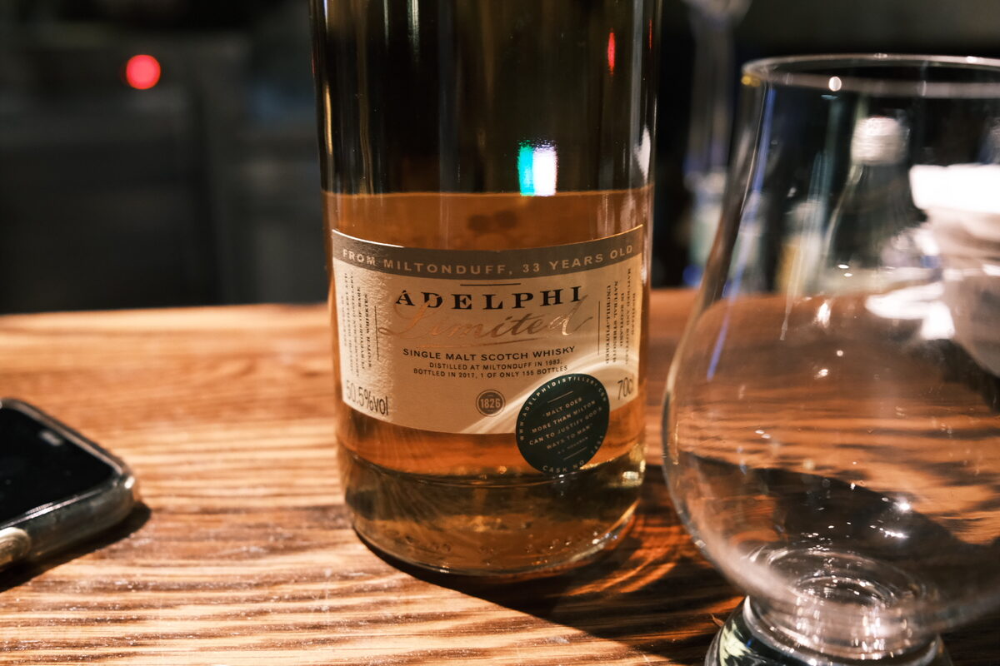

Miltonduff 1983 Adelphi 33 years 50.5% (refill bourbon barrel)
Big age statement here. High ABV for the age, too.
Colour Amber.
Nose Pine resin. Spicy mangoes. Lychees. Oak, cinnamon, and cloves. Bananas and banana bread. Sourdough. Quite grassy and floral. Macadamia nuts with a drizzle of honey. Ginger candies, bubblegum fruitiness. Perfumed.
Palate Woody, resinous and a bit of lacquer. Pears and cinnamon. Croissants and dried apples. Rice pudding. Pepperming candies. White chocolate with almonds, fruit jellies, and a splash of red wine. A bit of acidity, not unlike a balsamic vinegar.
Finish Perfumed, very warm. Shortbread. Cinnamon and apples. Boiled lollies and a bit of liquorice. Berries. Long, all flavour, not very hot. A bit of cream, perhaps a sweet digestif. Vanilla custard and oak.
Comments Grand and old. Enjoying the resinous notes I’m picking up. 87/100.

Posted by Dominic on 15 May 2021